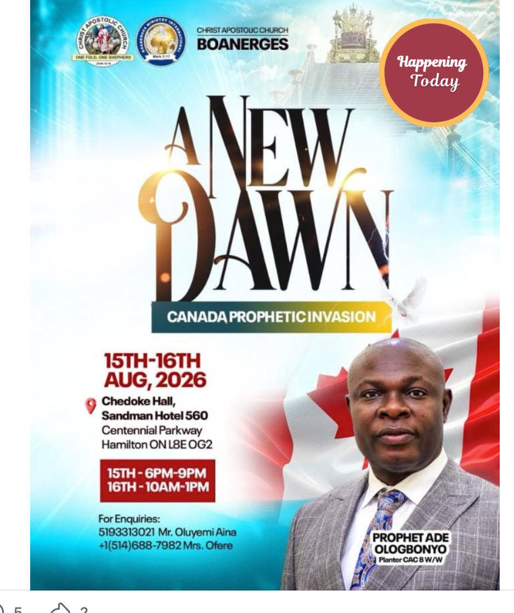

A place to belong.
A faith to grow.
Welcome to Christ Apostolic Church, Boanerges Zonal Headquarters. Come worship with us in Ojodu Berger, Lagos.
together in my name, there am I in the midst of them.”Matthew 18:20 · KJV
You are welcome
here.
Whether you are finding your way back to church, exploring faith, or looking for a place to worship, we welcome you to Christ Apostolic Church, Boanerges.
Join us as we turn our hearts to God in prayer, find encouragement in His Word, and share in the fellowship of believers.
“I was glad when they said unto me,Psalm 122:1 · KJV
Let us go into the house of the LORD.”
Prophet Joseph
Adegboyega Ologbonyo
Prophet Joseph Adegboyega Ologbonyo is an ordained pastor in Christ Apostolic Church and the founder of CAC Boanerges W/W. He serves as Zonal Superintendent of CAC Boanerges Zonal Headquarters in Ojodu Berger, Lagos.
Connect with Prophet Ologbonyo on Facebook ↗Stay connected.

A New Dawn
Canada Prophetic Invasion
The ministry’s announcement featured Prophet Ade Ologbonyo for a two-day programme at Chedoke Hall, Sandman Hotel, Hamilton, Ontario, Canada.
This flyer is preserved as a past announcement. Its “Happening Today” badge and enquiry contacts relate to the August 2026 event.
View the original announcement ↗For ministry messages and programme announcements, visit the pastor’s Facebook page.
Visit the Facebook page ↗Your next step
starts here.
We look forward to welcoming you. Find your way to our Zonal Headquarters in Ojodu Berger.
Visit CAC Boanerges
2 Limson RoadOpposite AP Filling Station
By Kara Long Bridge
Ojodu Berger, Lagos, NigeriaOpen in Google Maps ↗
Look for AP Filling Station by Kara Long Bridge.